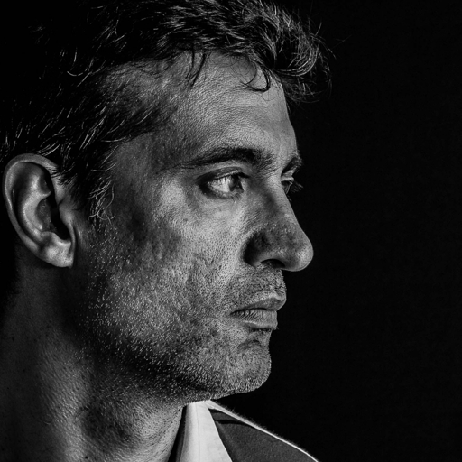
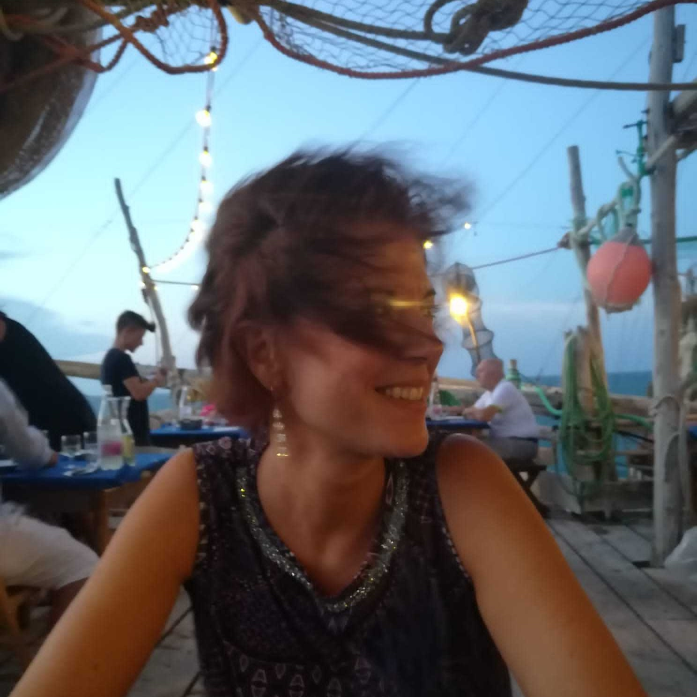
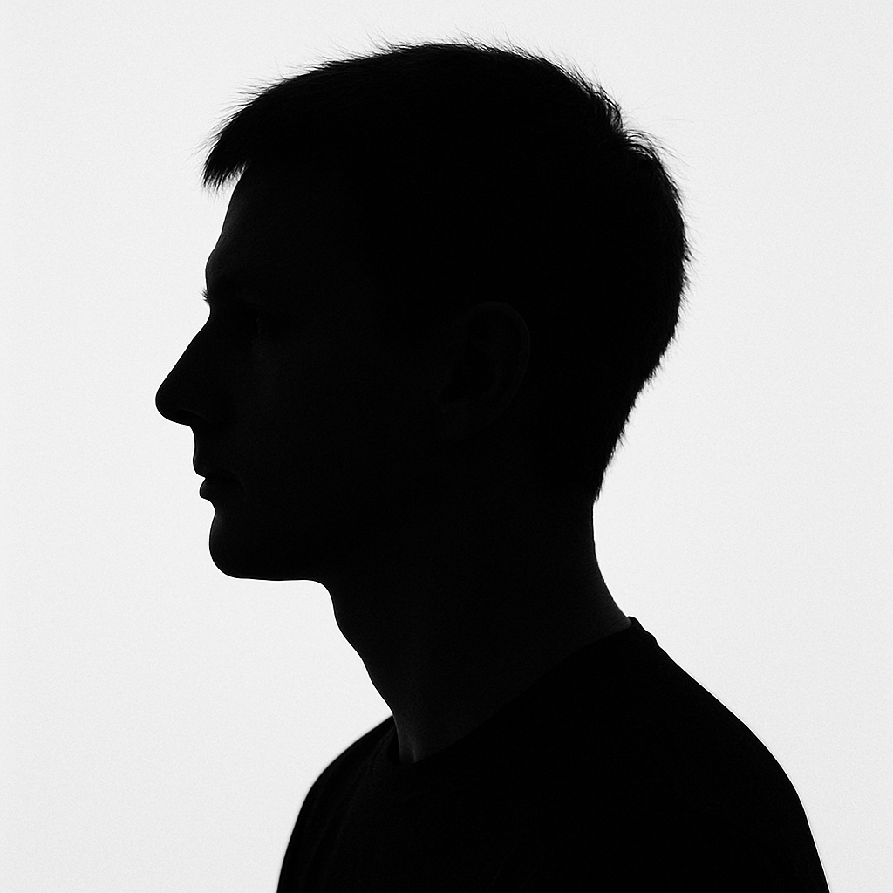

Il Consiglio Direttivo
Questa pagina è in costruzione!
Il Consiglio direttivo (CD) dell’Associazione Witness Journal APS è attualmente composto da 9 membri, eletti dall’assemblea dei soci del 30 Aprile 2025 per il triennio 2025-2028.
Il CD si riunisce periodicamente, tipicamente il primo lunedì del mese, per discutere e prendere decisioni sulle questioni relative all’associazione.
Le riunioni sono aperte a tutti i soci, che possono partecipare e contribuire alle discussioni, previa richiesta di partecipazione come uditori. La richiesta va indirizzata a almeno 48 ore prima della riunione.
L’indirizzo accetta esclusivamente email provenienti da indirizzi @witnessjournal.com.
Componenti
Il Consiglio direttivo è composto da:
Giulio Di Meo
Presidente | | @giuliodimeo 
Ruvianese DOCG (CE), sono un fotografo impegnato da più di dieci anni nell’ambito del reportage e della didattica. Organizzo incontri e workshop di reportage e di street photography, in Italia e all’estero, e laboratori per bambini, adolescenti, immigrati e disabili per promuovere la fotografia come strumento di espressione e integrazione. Fotografo freelance, collaboro con diverse associazioni e ONG, in particolar modo con l’Arci.
Paolo Bosetti
Trentino di Trento. Sono docente universitario e fotografo per passione. Sono tra i fondatori del gruppo territoriale WJ di Trento.
Lorenzo Perone
Tesoriere | | @lorenzo_perone

Sono appassionato di fotografia fin dall’adolescenza, per molti anni di ritratto e poi, folgorato sulla via di Damasco da Giulio Di Meo, mi sono appassionato ai reportage e alla fotografia sociale. Sono incuriosito ed attratto da ogni nuova tecnologia che intercetto e, qualche volta, riesco anche a farci qualcosa di utile.
Ilaria De Marinis
Segretaria | | @sparkling77

Sono nata a Roma e vivo a Bologna da Ottobre 2021. Dopo aver iniziato con una timida compatta regalata da mia sorella dopo il suo viaggio a Tokyo, mi sono avvicinata sempre di più a questo splendido mondo. Sono fortemente attratta dai reportage fotografici e dalla espressività visiva delle emozioni e delle situazioni umane.
Lidia Addesa
Consigliere |
Matilde Castagna
Consigliere | | @matiblu 
Sono nata a Lecco e la mia passione per l’immagine è cresciuta durante i lunghi viaggi a fianco di mio padre nel cuore profondo dell’Africa e a cavallo delle infinite steppe asiatiche. Mi occupo di fotografia e video, sono free-lance e collaboro a diversi progetti di documentazione fotografica e cultura del territorio.
Erika Cresti
Consigliere | 
Pratese di nascita, ma fiorentina d’adozione. Appassionata di fotografia e curiosa di natura, cerco di approfondire questo interesse mediante la partecipazione a corsi, workshop di street photography e reportage e con l’immancabile, quanto essenziale, “scrittura con la luce”! Affascinata dal mondo di WJ, cerco di dare il mio contributo in questa nuova e bella avventura associativa con la voglia di crescere e imparare a raccontare storie attraverso le immagini.
Stefano Pontiggia
Consigliere | | @stpontiggia

Nato e cresciuto in Brianza, sono un antropologo con una passione di lunga data per la fotografia. Ho sperimentato la camera scura in vari formati, seguito percorsi di formazione ed esposto un piccolo lavoro all’IMP Festival di Padova nel 2024. Considero la fotografia uno strumento per condurre ricerca e conoscere i miei posti di vista e cerco di unirla alla scrittura per un racconto più profondo della realtà.
Sarah Taranto
Consigliere | | @sarah.taranto